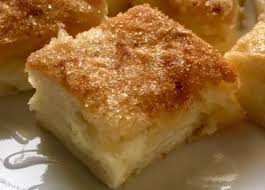

Cream Cheese Squares

The perfect treat for those with a sweet tooth! Delicious and savory come together to make these perfect little squares. Perfect for a quick treat at home or a baked good for a party, lets make something everyone will enjoy!
Estimated Cook Time: 45 minutes to an hour
Ingredients:
Crust:
- 2/3 cup margarine
- 2/3 cup brown sugar
- 2 cups flour
- 1 cup chopped walnuts or oatmeal
Filling:
- 1/2 cup granulated sugar
- 16oz. cream cheese
- 2 eggs
- 1 tbsp. lemon juice
- Cinnamon, to taste
- Vanilla, as desired
Instructions:
Crust:
- Mix flour and sugar together in large bowl.
- Cut in margarine while stirring to create a crumbly mixture. Mix in nuts or oatmeal, as desired. Set aside 1 cup of this mixture for later use.
- Put the remainder into a 9x13 pan to form the crust. Bake at 350 degrees Farenheit for 15 minutes.
Filling:
- With a mixer, beat the cream cheese, add eggs, milk, sugar, lemon juice, and vanilla.
- Mix this spread over cooked crust with spatula.
- Spread leftover cup of crust mixture and cinnamon on top.
- Bake for an additional 25 minutes at 350 degrees Farenheit.